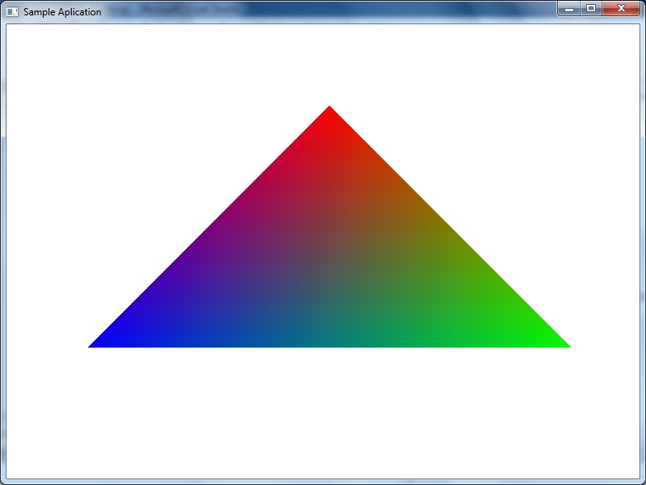

Загрузить архив с примерами ЗДЕСЬ.
Результат работы программы для данной главы показан на рисунке ниже:

Как интерполировать цвета вершин треугольника показано в примере /src/02.002-color_cube/Tri_Color_Interpolation.
В прошлом примере у каждого треугольника куба был свой цвет. В этом примере у каждой вершины куба есть цвет, цвет вершины, и мы будем интерполировать цвета. Загрузить проект примера можно (использовалась функция DrawDibDraw) /src/02.002-color_cube/Color_Cube.
Какие отличия от предыдущего проекта. В буфере вершин как и в предыдущих проектах 8 вершин куба. И так же имеется массив цветов из 8ми элементов, цвет для каждой вершины (см.функцию Init_Cube):
//color array for all 8 vertices m_color_array[0] = color_rgb(255, 255, 255); m_color_array[1] = color_rgb(0, 0, 0); m_color_array[2] = color_rgb(255, 0, 0); m_color_array[3] = color_rgb(0, 255, 0); m_color_array[4] = color_rgb(0, 0, 255); m_color_array[5] = color_rgb(255, 255, 0); m_color_array[6] = color_rgb(0, 255, 255); m_color_array[7] = color_rgb(255, 0, 255);
В конце функции Draw_Cube есть вызов функции:
Draw_Color_Triangle(v1.x, v1.y, v2.x, v2.y, v3.x, v3.y, rgb1, rgb2, rgb3);
В функцию Draw_Color_Triangle мы передаем три вершины треугольника в экранных координатах, и три цвета rgb1, rgb2, rgb3- эти три цвета соответствуют трем вершинам треугольника, цвета заранее приготовлены в массиве m_color_array. Далее в функции Draw_Color_Triangle мы сортируем вершины (как в предыдущем примере), но также в случае необходимости меняем местами цвета вершины:
void CMeshManager::Draw_Color_Triangle(float x1,float y1,
float x2,float y2,
float x3,float y3,
color_rgb color1,
color_rgb color2,
color_rgb color3)
{
float t;
int ct;
int side;
if (y2 < y1)
{
SWAP(x2,x1,t);
SWAP(y2,y1,t);
SWAP(color2.r, color1.r, ct);
SWAP(color2.g, color1.g, ct);
SWAP(color2.b, color1.b, ct);
}
if (y3 < y1)
{
SWAP(x3,x1,t);
SWAP(y3,y1,t);
SWAP(color3.r, color1.r, ct);
SWAP(color3.g, color1.g, ct);
SWAP(color3.b, color1.b, ct);
}
if (y3 < y2)
{
SWAP(x3,x2,t);
SWAP(y3,y2,t);
SWAP(color3.r, color2.r, ct);
SWAP(color3.g, color2.g, ct);
SWAP(color3.b, color2.b, ct);
}
Далее как обычно определяем какая сторона треугольника длинее по Y:
//определяем какая сторона треугольника длинее
if (y2 > y1 && y3 > y2)
{
float dxdy1 = (x2 - x1) / (y2 - y1);
float dxdy2 = (x3 - x1) / (y3 - y1);
side = dxdy2 > dxdy1;
}
if (y1 == y2)
side = x1 > x2;
if (y2 == y3)
side = x3 > x2;
И далее рисуем треугольник (в примере ниже показано только для треугольника с левой стороной длинее). Вычисляем начальную точку для x, red компоненты цвета, green и blue. И вычисляем приращение по Y для x, red компоненты, green и blue. Далее рисуем треугольник Draw_Color_Poly.
if (!side) //длинее левая сторона
{
m_xl = x1;
m_redl = (float) color1.r;
m_greenl = (float) color1.g;
m_bluel = (float) color1.b;
m_dxl = (x3 - x1) / (y3 - y1);
m_dredl = (color3.r - color1.r) / (y3 - y1);
m_dgreenl = (color3.g - color1.g) / (y3 - y1);
m_dbluel = (color3.b - color1.b) / (y3 - y1);
if ( y1 < y2)
{
m_xr = x1;
m_redr = (float) color1.r;
m_greenr = (float) color1.g;
m_bluer = (float) color1.b;
m_dxr = (x2 - x1) / (y2 - y1);
m_dredr = (color2.r - color1.r) / (y2 - y1);
m_dgreenr = (color2.g - color1.g) / (y2 - y1);
m_dbluer = (color2.b - color1.b) / (y2 - y1);
Draw_Color_Poly((int)y1, (int)y2);
}
if(y2 < y3)
{
m_xr = x2;
m_redr = (float) color2.r;
m_greenr = (float) color2.g;
m_bluer = (float) color2.b;
m_dxr = (x3 - x2) / (y3 - y2);
m_dredr = (color3.r - color2.r) / (y3 - y2);
m_dgreenr = (color3.g - color2.g) / (y3 - y2);
m_dbluer = (color3.b - color2.b) / (y3 - y2);
Draw_Color_Poly((int)y2, (int)y3);
}
}
В функции Draw_Color_Poly мы идем в цикле от y1 до y2, и от xl до xr, внутри цикла от y1 до y2 мы вычисляем начальную точку ri, gi, bi и приращение dr, dg, db для интерполяции значений по x, и интерполируем значения внутри цикла от xl до xr.